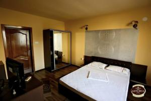
Cameră matrimonială
Confortul de acasă
Pat matrimonial generos, mobilier din lemn și lumină caldă pentru un somn odihnitor.
Baie proprieTV cabluWiFi
Pensiune & Restaurant · Drobeta-Turnu Severin
Zece camere primitoare, un restaurant à la carte cu terasă și bar, recepție deschisă zi și noapte — la doar 300 de metri de Carrefour. Astoria e locul în care te oprești și te simți acasă.
Despre Astoria
Finalizată în 2014, Pensiunea Astoria îmbină confortul modern cu ospitalitatea de altădată.
Suntem o pensiune de familie în Drobeta-Turnu Severin, la 300 de metri de Centrul Comercial Carrefour și la aproximativ 32 km de stațiunea Băile Herculane. Poziția aproape de intrarea în oraș face din Astoria un popas comod pentru turiști, pentru cei aflați în tranzit și pentru vizitatorii veniți cu treabă în Mehedinți.
Sub același acoperiș găsești cazare în camere îngrijite, un restaurant à la carte, un bar și o terasă cu grădină. Recepția este deschisă non-stop, iar oaspeții beneficiază de WiFi gratuit în toată clădirea și de parcare privată gratuită.
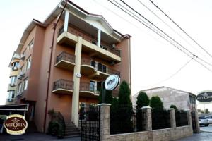
Ce găsești la noi
Tot ce ai nevoie pentru un sejur liniștit, de la recepția non-stop la micul dejun servit în cameră.
Internet wireless gratuit în toată clădirea, în camere și în spațiile comune.
Parcare privată gratuită la fața locului, chiar lângă pensiune.
Recepție deschisă non-stop, check-in și check-out privat, depozitare bagaje.
Restaurant à la carte, bar, room service și mic dejun servit în cameră.
Camere climatizate, cu încălzire și zonă special amenajată pentru fumat.
Terasă la soare, grădină, sală de jocuri și un salon comun cu televizor.
Cazare
Zece camere îngrijite, în tonuri calde de lemn, fiecare cu baie proprie și televizor cu cablu. Curățenie zilnică asigurată.

Pat matrimonial generos, mobilier din lemn și lumină caldă pentru un somn odihnitor.
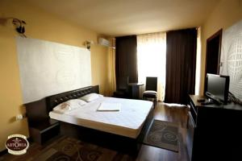
Cameră aerisită, cu spațiu de relaxare și dotările necesare unui sejur comod.
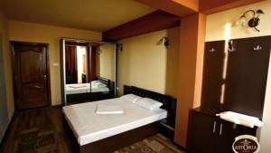
Amenajare simplă și primitoare, ideală pentru turiști și călători aflați în tranzit.
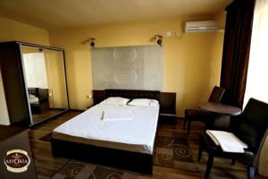
Nuanțe de miere și lemn de nuc, pentru un ambient primitor de la primul pas.
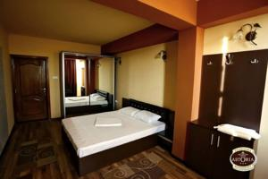
Cameră funcțională cu spațiu de depozitare și zonă de lucru, gata oricând de oaspeți.
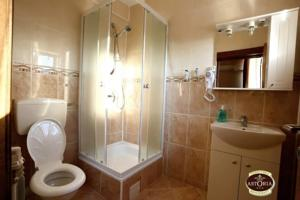
Fiecare cameră are baie proprie cu duș, dotată complet și menținută impecabil.
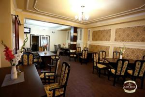
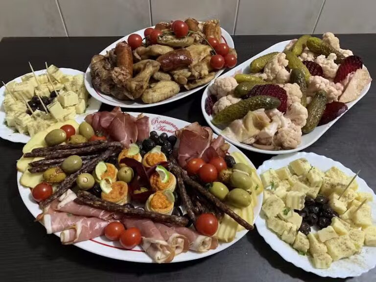
Restaurant à la carte
Restaurantul Astoria te așteaptă cu preparate à la carte, platouri generoase și un decor clasic, cald. Fie că iei micul dejun înainte de drum sau te oprești la o cină în tihnă, bucătăria noastră gătește cu grijă pentru fiecare oaspete.
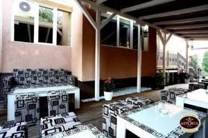
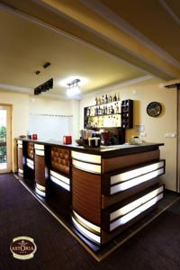
Terasă, bar & grădină
Când vremea e frumoasă, terasa la soare și grădina sunt locul perfect pentru o cafea de dimineață sau o seară relaxată. Pentru serile mai lungi, barul rămâne deschis, iar salonul comun cu televizor și sala de jocuri completează atmosfera de popas de familie.
Galerie
Camere, restaurant, terasă și grădină — imagini reale din pensiune.
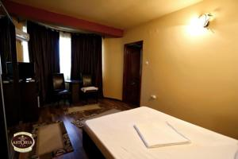
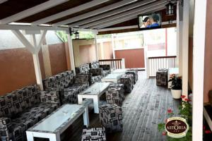
Rezervări
Sună-ne pentru disponibilitate, tarife sau o masă la restaurant. Îți răspundem cu drag.
Contact & program
Strada Gheorghe Anghel 137, Drobeta-Turnu Severin — la 300 m de Carrefour.